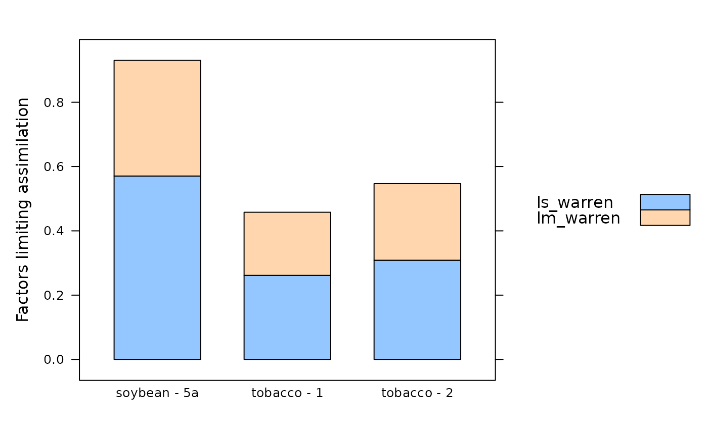

Estimate the relative limiting factors to C3 photosynthesis
calculate_c3_limitations_warren.RdUses the method from Warren et al. (2003) to estimate the relative limitations to C3 photosynthesis due to stomatal conductance and mesophyll conductance. This function can accomodate alternative column names for the variables taken from the data file in case they change at some point in the future. This function also checks the units of each required column and will produce an error if any units are incorrect.
Usage
calculate_c3_limitations_warren(
exdf_obj,
POc = 210000,
atp_use = 4.0,
nadph_use = 8.0,
alpha = 0.0,
curvature_cj = 1.0,
curvature_cjp = 1.0,
ca_column_name = 'Ca',
cc_column_name = 'Cc',
ci_column_name = 'Ci',
gamma_star_column_name = 'Gamma_star',
j_column_name = 'J_at_25',
j_norm_column_name = 'J_norm',
kc_column_name = 'Kc',
ko_column_name = 'Ko',
rd_column_name = 'Rd_at_25',
rd_norm_column_name = 'Rd_norm',
total_pressure_column_name = 'total_pressure',
tpu_column_name = 'TPU',
vcmax_column_name = 'Vcmax_at_25',
vcmax_norm_column_name = 'Vcmax_norm'
)Arguments
- exdf_obj
An
exdfobject representing gas exchange data.- POc
The partial pressure of O2 in the chloroplast, expressed in
microbar. This is often assumed to be the ambient value. For air measurements, this would be 21 percent O2, which is about 210000 microbar at standard atmospheric pressure. For low oxygen measurements, this would be 2 percent O2, which is about 20000 microbar.- atp_use
The number of ATP molecules used per C3 cycle.
- nadph_use
The number of NADPH molecules used per C3 cycle.
- alpha
A dimensionless parameter greater than or equal to 0 and less than or equal to 1 that represents the fraction of glycolate carbon not returned to the chloroplast.
- curvature_cj
A dimensionless quadratic curvature parameter greater than or equal to 0 and less than or equal to 1 that sets the degree of co-limitation between
WcandWj. A value of 1 indicates no co-limitation.- curvature_cjp
A dimensionless quadratic curvature parameter greater than or equal to 0 and less than or equal to 1 that sets the degree of co-limitation between
WcjandWp. A value of 1 indicates no co-limitation.- ca_column_name
The name of the column in
exdf_objthat contains the ambient CO2 concentration inmicromol mol^(-1).- cc_column_name
The name of the column in
exdf_objthat contains the chloroplastic CO2 concentration inmicromol mol^(-1). Typically these are calculated usingapply_gm.- ci_column_name
The name of the column in
exdf_objthat contains the intercellular CO2 concentration inmicromol mol^(-1).- gamma_star_column_name
The name of the column in
exdf_objthat contains theGamma_starvalues inmicromol mol^(-1). Typically these are the leaf-temperature dependent values calculated usingcalculate_arrhenius.- j_column_name
The name of the column in
exdf_objthat contains values of the RuBP regeneration rate (J) inmicromol m^(-2) s^(-1)at 25 degrees C.- j_norm_column_name
The name of the column in
exdf_objthat contains the normalizedJvalues (with units ofnormalized to J at 25 degrees C). Typically these are the leaf-temperature dependent values calculated usingcalculate_arrhenius.- kc_column_name
The name of the column in
exdf_objthat contains the Michaelis-Menten constant for rubisco carboxylation inmicromol mol^(-1). Typically these are the leaf-temperature dependent values calculated usingcalculate_arrhenius.- ko_column_name
The name of the column in
exdf_objthat contains the Michaelis-Menten constant for rubisco oxygenation inmmol mol^(-1). Typically these are the leaf-temperature dependent values calculated usingcalculate_arrhenius.- rd_column_name
The name of the column in
exdf_objthat contains values of the day respiration rate (Rd) inmicromol m^(-2) s^(-1)at 25 degrees C.- rd_norm_column_name
The name of the column in
exdf_objthat contains the normalizedRdvalues (with units ofnormalized to Rd at 25 degrees C).- total_pressure_column_name
The name of the column in
exdf_objthat contains the total pressure inbar. Typically this is calculated usingcalculate_total_pressure.- tpu_column_name
The name of the column in
exdf_objthat contains the rate of triose phosphate utilization inmicromol m^(-2) s^(-1).- vcmax_column_name
The name of the column in
exdf_objthat contains the maximum rate of Rubisco carboxylation (Vcmax) inmicromol m^(-2) s^(-1)at 25 degrees C.- vcmax_norm_column_name
The name of the column in
exdf_objthat contains the normalizedVcmaxvalues (with units ofnormalized to Vcmax at 25 degrees C).
Details
When analyzing or interpreting C3 gas exchange data, it is often useful to
estimate the relative limitations to assimilation that are due to stomatal
conductance or mesophyll conductance. This can be done using a framework first
introduced by Warren et al. (2003). In this framework, the relative limitation
due to stomatal conductance (ls) is
ls = (An_inf_gsc - A_modeled) / An_inf_gsc
and the relative limitation due to mesophyll conductance (lm) is
lm = (An_inf_gmc - A_modeled) / An_inf_gmc. These are equations 10 and
11 in Warren et al. (2003).
In these equations A_modeled is the net assimilation rate calculated
using the Farquhar-von-Caemmerer-Berry (FvCB) model at the measured value of
the chloroplast CO2 concentration (Cc). The other two assimilation
rates (An_inf_gsc and An_inf_gmc) are also calculated using the
FvCB model, but under different assumptions: An_inf_gsc assumes that
stomatal conductance is infinite while mesophyll conductance is as measured,
while An_inf_gmc assumes that mesophyll conductance is infinite while
stomatal conductance is as measured.
In other words, ls expresses the observed assimilation rate as a
fractional decrease relative to a hypothetical plant with infinite stomatal
conductance, while lm expresses the observed assimilation rate as a
fractional decrease relative to a hypothetical plant with infinite mesophyll
conductance.
For example, if lm = 0.4, this means that the observed assimilation
rate is 40 percet lower than a hypothetical plant with infinite mesophyll
conductance. If mesophyll conductance were to increase (all else remaining
the same), then lm would decrease. This is not the case with other
estimations of limiting factors, such as the one used in
calculate_c3_limitations_grassi. (See Leverett & Kromdijk for
more details.)
To actually calculate An_inf_gsc and An_inf_gmc, it is first
necessary to estimate the corresponding values of Cc that would occur
with infinite stomatal or mesophyll conductance. This can be done with a 1D
diffusion equation expressed using drawdown values:
Cc = Ca - drawdown_cs - drawdown_cm,
where drawdown_cs = Ca - Ci is the drawdown of CO2 across the stomata
(assuming infinite boundary layer conductance) and
drawdown_cm = Ci - Cc is the drawdown of CO2 across the mesophyll. If
one conductance is infinite, the corresponding drawdown becomes zero. Thus, we
have:
Cc_inf_gsc = Ca - 0 - (Ci - Cc) = Ca - Ci + Cc
and
Cc_inf_gmc = Ca - (Ca - Ci) - 0 = Ci,
where Cc_inf_gsc is the value of Cc that would occur with
infinite stomatal conductance and the measured mesophyll conductance, and
Cc_inf_gmc is the value of Cc that would occur with infinite
mesophyll conductance and the measured stomatal conductance.
Once values of Cc, Cc_inf_gsc, and Cc_inf_gmc, the
corresponding assimilation rates are calculated using
calculate_c3_assimilation, and then the limitation factors are
calculated as described above.
References:
Warren, C. R. et al. "Transfer conductance in second growth Douglas-fir (Pseudotsuga menziesii (Mirb.)Franco) canopies." Plant, Cell & Environment 26, 1215–1227 (2003) [doi:10.1046/j.1365-3040.2003.01044.x ].
Leverett, A. & Kromdijk, J. "The long and tortuous path towards improving photosynthesis by engineering elevated mesophyll conductance." [doi:10.22541/au.170016201.13513761/v1 ].
Value
This function returns an exdf object based on exdf_obj but with
several new columns representing the quantities discussed above:
Cc_inf_gsc, Cc_inf_gmc, An_inf_gsc, An_inf_gmc,
ls_warren, and lm_warren.
Examples
# Read an example Licor file included in the PhotoGEA package
licor_file <- read_gasex_file(
system.file('extdata', 'c3_aci_1.xlsx', package = 'PhotoGEA', mustWork = TRUE)
)
# Define a new column that uniquely identifies each curve
licor_file[, 'species_plot'] <-
paste(licor_file[, 'species'], '-', licor_file[, 'plot'] )
# Organize the data
licor_file <- organize_response_curve_data(
licor_file,
'species_plot',
c(9, 10, 16),
'CO2_r_sp'
)
# Specify mesophyll conductance
licor_file <- set_variable(
licor_file,
'gmc', 'mol m^(-2) s^(-1) bar^(-1)', value = 0.5
)
# Calculate the total pressure in the Licor chamber
licor_file <- calculate_total_pressure(licor_file)
# Calculate additional gas properties
licor_file <- calculate_gas_properties(licor_file)
# Calculate Cc
licor_file <- apply_gm(licor_file)
# Calculate temperature-dependent values of C3 photosynthetic parameters
licor_file <- calculate_arrhenius(licor_file, c3_arrhenius_bernacchi)
# Fit all curves in the data set
aci_results <- consolidate(by(
licor_file,
licor_file[, 'species_plot'],
fit_c3_aci,
Ca_atmospheric = 420
))
# Get a subset of fitting results corresponding to the first measured point
# in each curve (where CO2_r_sp = 400 ppm)
aci_fit_subset <- aci_results$fits[aci_results$fits[, 'CO2_r_sp'] == 400, , TRUE]
# Calculate limiting factors
aci_fit_subset <- calculate_c3_limitations_warren(aci_fit_subset)
# View the limiting factors for each species / plot
col_to_keep <- c(
'species', 'plot', # identifiers
'ls_warren', 'lm_warren' # limitation info
)
aci_fit_subset[ , col_to_keep, TRUE]
#> species [UserDefCon] (NA) plot [UserDefCon] (NA)
#> 8 soybean 5a
#> 21 tobacco 1
#> 34 tobacco 2
#> ls_warren [calculate_c3_limitations_warren] (dimensionless)
#> 8 0.8230455
#> 21 0.2632085
#> 34 0.3086578
#> lm_warren [calculate_c3_limitations_warren] (dimensionless)
#> 8 0.6894644
#> 21 0.1977779
#> 34 0.2381895
# Display as a bar chart
lattice::barchart(
ls_warren + lm_warren ~ species_plot,
data = aci_fit_subset$main,
stack = TRUE,
auto = TRUE,
ylab = 'Factors limiting assimilation'
)
